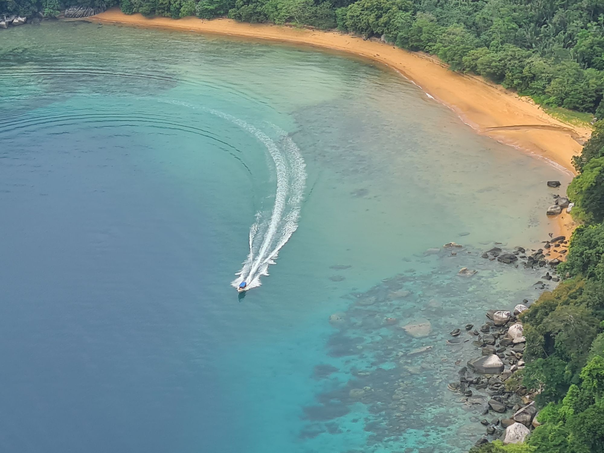
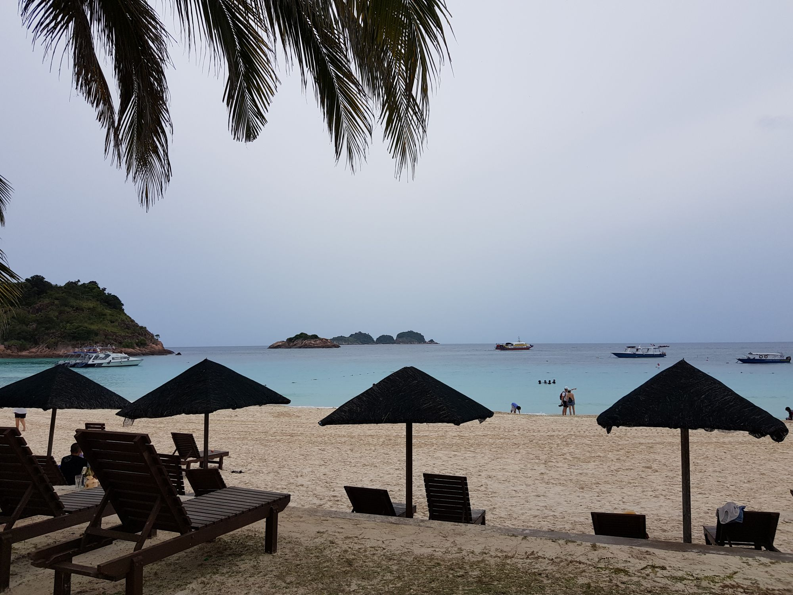

Malaysia · Living Abroad
Between Work and Weekend Escapes
관광으로 방문했을 때와 실제로 살아보는 말레이시아는 전혀 다른 느낌이었다.
평일에는 일을 하고, 시간이 나는 대로 작은 도시와 섬들을 찾아다니며 천천히 이 나라를 알아가는 중이다.
여행지로 알려지지 않은 로컬 맛집들을 찾아다니는 것, 갑자기 쏟아지는 스콜까지도 이제는 일상의 일부가 되었다.
Read JournalExplore by Place
Cities, islands, cafés, and small places collected while living in Malaysia.